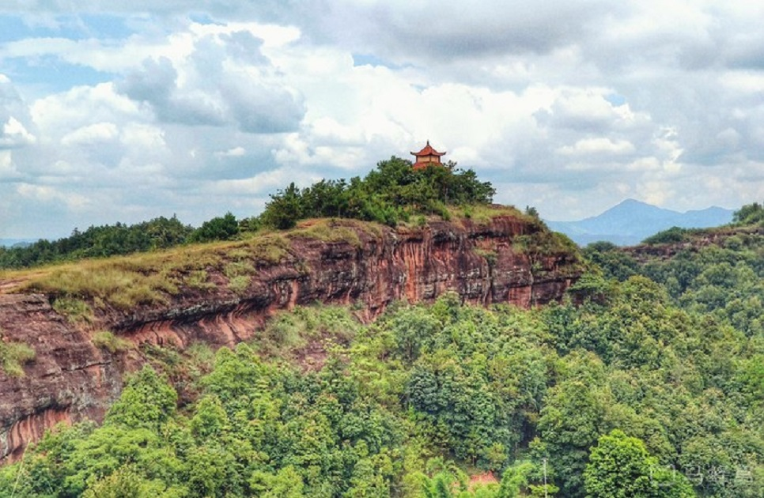
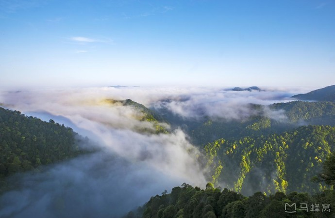
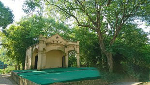
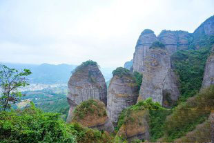
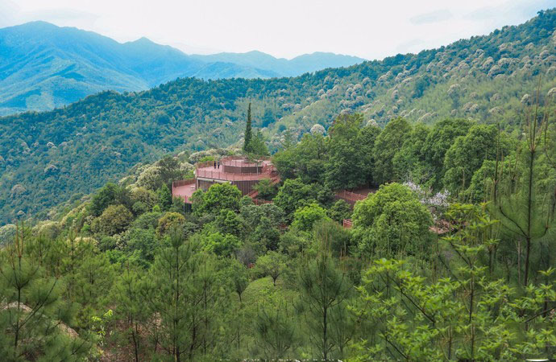

景点介绍
-

通天岩
通天岩风景区位于江西省赣州市章贡区西北郊6.8千米处，通天岩石窟开凿于唐朝，兴盛于北宋，至今保留着唐朝至宋代的石龛造像359尊，宋代至民国的摩崖题刻128品，被誉为“江南第一石窟”。 通天岩风景区由摩沙岩石山组成，是一处典型的丹霞地貌风景区。多天然岩洞。其一岩洞顶有一窍，相传上可通天，故名。主要有通天岩、翠微岩、忘归岩、同心岩、广福寺、玉水池、一滴泉、玉岩亭、惜春亭和群玉阁等10多处景点。 通天岩风景区是全国重点文物保护单位、国家AAAA级旅游景区。
-

三百山温泉景区
三百山温泉景区内满谷纵横，溪流密布，剑河深涧，水秀瀑雄。三百山及其附近300多平方公里山地上森林茂密，古木参天，巨藤倒挂，遮天蔽日。三百山国家森林公园集山势、林海、瀑布、温泉四大自然风景奇观为一体。三百山国家森林公园又属寒武纪火山其景观集奇峰幽壑、清溪碧湖、飞瀑深潭、密林古树、珍禽异兽、怪石险滩、温泉等诸奇景于一体，熔清幽、奇秀、雄险、古朴等特色于一炉，是一处纯天然、高品位的风景名胜区，尤其是清澈秀丽的东江源，壮观密集的潭瀑群，保存完好的常绿阔叶林，无可挑剔的环境质量堪称三百山的“四绝”。
-

瑞金叶坪红色旅游景区
叶坪红色旅游景区位于瑞金市叶坪乡叶坪村，距城区5公里，是全国保存最为完好的革命旧址群之一。拥有革命旧址和纪念建筑物23处，其中全国重点文物保护单位16处。这里既是中国第一个全国性红色政权——中华苏维埃共和国临时中央政府的诞生地，又是中共苏区中央局和临时中央政府机关在瑞金的第一个驻地。毛泽东、周恩来、朱德、任弼时、王稼祥等老一辈无产阶级革命家都在这里生活和工作过，“毛主席”的称呼就是从这里喊响的。是全国爱国主义教育示范基地之一和全国红色旅游经典景区。
-

南武当山
南武当山，矗立在江西最南端的龙南市武当镇境内，赣粤交界处，素有江西大门之称。 南武当山风景区东接广东省和平县，南邻广东省连平县，西邻九连山亚热带原始森林，北起龙南武当镇。 武当山，总规划面积13.5平方公里，主峰海拔864米，九十九座奇峰平地突兀而起，绵十数公里，犹如一幅美妙的画卷，沿105国道徐徐展开，随着旅游业的迅猛发展，南武当山风景区已成为赣、粤、湘、闽及港、澳、东南亚等地的旅游热点。
-

丫山景区
丫山风景区以丫山石林、峰丛洼地、漏斗、溶洞、天坑、地下暗河、岩溶湖等具独特风格的岩溶地貌景观为核心资源，以二叠—三叠系标准地层剖面、珠帘瀑、三叠瀑、独龙峡景观等为特色，辅以牡丹文化、佛教文化、民俗文化等人文景观，集科学研究、科普教育、地质旅游、休闲度假、文化娱乐等多功能于一体，是华东地区典型的以岩溶地貌景观为特色的综合性地质公园。丫山风景区是国家AAAA级风景区，是皖南旅游的新亮点，游客称它是“华东最美的后花园”。